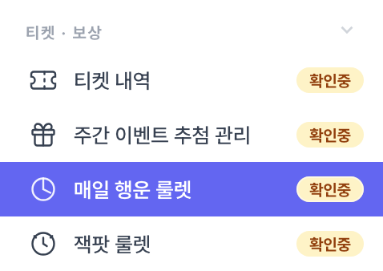
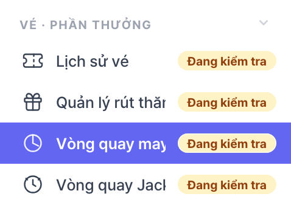
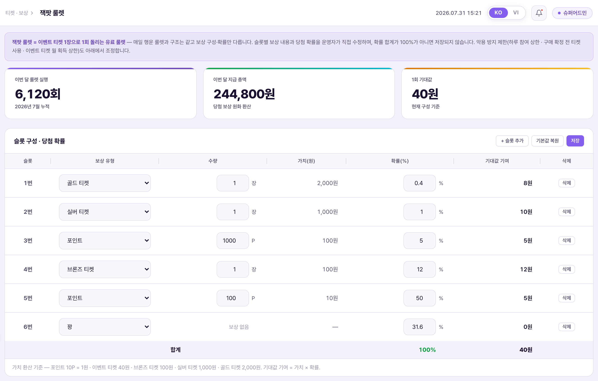
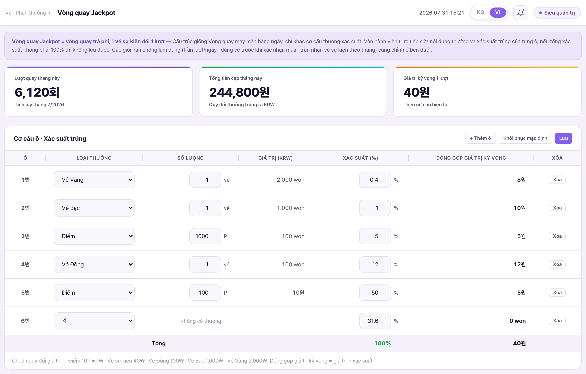
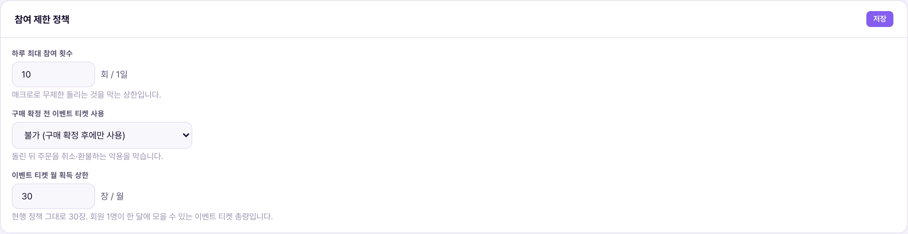
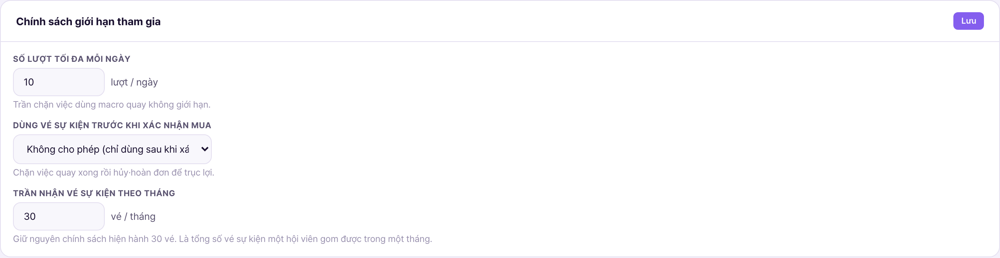
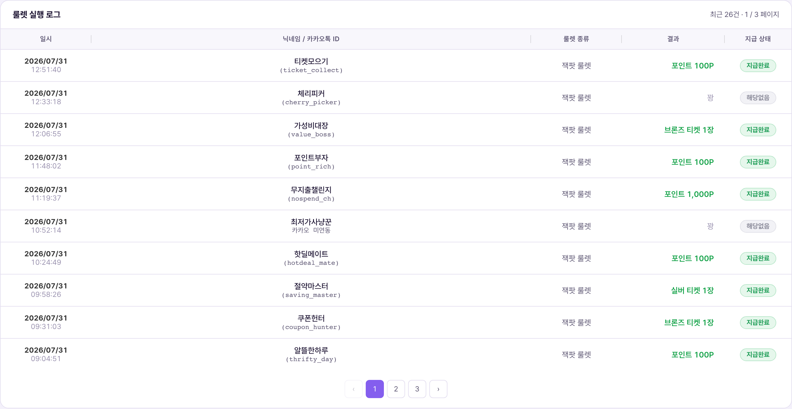
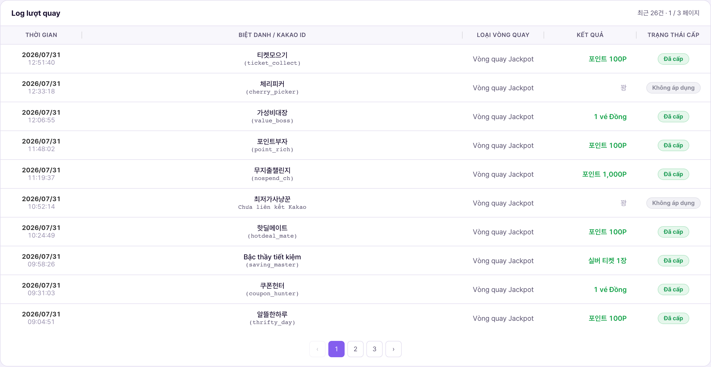

무료 룰렛(매일 행운 룰렛)은 별도 메뉴에서 관리한다. 두 화면은 렌더·검증·저장 로직을 공유하므로 표 조작 방법은 완전히 같다 — 이 문서는 잭팟 룰렛에만 있는 것을 중심으로 기술한다.Vòng quay miễn phí (Vòng quay may mắn hằng ngày) được quản lý ở menu riêng. Hai màn dùng chung logic render·kiểm tra·lưu nên cách thao tác bảng hoàn toàn giống nhau — tài liệu này tập trung vào những gì chỉ Vòng quay Jackpot mới có.
좌측 메뉴 티켓 · 보상 그룹의 맨 아래, 매일 행운 룰렛 바로 다음이다.Nằm cuối nhóm Vé · Thưởng ở menu bên trái, ngay sau Vòng quay may mắn hằng ngày.


위에서부터 안내 박스 → 통계 카드 3장 → 슬롯 구성 · 당첨 확률 카드 → 참여 제한 정책 카드 → 룰렛 실행 로그 카드. 매일 행운 룰렛과 비교하면 참여 제한 정책 카드 하나가 더 있다.Từ trên xuống: hộp hướng dẫn → 3 thẻ thống kê → thẻ Cơ cấu ô · Xác suất trúng → thẻ Chính sách giới hạn tham gia → thẻ Log lượt quay. So với Vòng quay may mắn hằng ngày thì có thêm một thẻ Chính sách giới hạn tham gia.


카드 3장의 의미는 매일 행운 룰렛과 같다. 다만 실행 횟수 집계 대상이 잭팟 룰렛뿐이라 두 화면의 숫자는 섞이지 않는다. "이번 달 지급 총액"은 실행 횟수 × 1회 기대값이므로 슬롯을 고치면 즉시 같이 움직인다.Ý nghĩa 3 thẻ giống Vòng quay may mắn hằng ngày. Chỉ khác là đối tượng tổng hợp số lượt chỉ gồm Vòng quay Jackpot nên con số của hai màn không trộn lẫn. "Tổng tiền cấp tháng này" = số lượt × giá trị kỳ vọng 1 lượt, nên sửa ô là đổi theo ngay.
컬럼 구성(슬롯 / 보상 유형 / 수량 / 가치(원) / 확률(%) / 기대값 기여), 버튼 2종(기본값 복원 · 저장), 슬롯 6개 고정, 가치 환산 기준까지 매일 행운 룰렛과 동일하다. 자세한 내용은 매일 행운 룰렛 3-2를 참고한다.Cấu hình cột (Ô / Loại thưởng / Số lượng / Giá trị (KRW) / Xác suất (%) / Đóng góp GTKV), 2 nút (Khôi phục mặc định · Lưu), cố định 6 ô, và chuẩn quy đổi giá trị đều giống Vòng quay may mắn hằng ngày. Chi tiết xem mục 3-2 của Vòng quay may mắn hằng ngày.
6슬롯 · 확률 합계 100% · 1회 기대값 40원. 이벤트 티켓 1장의 가치를 40원으로 잡는 근거가 바로 이 기대값이다.6 ô · tổng xác suất 100% · giá trị kỳ vọng 1 lượt 40₩. Chính giá trị kỳ vọng này là căn cứ để định giá 1 vé sự kiện bằng 40₩.
| 슬롯Ô | 보상Thưởng | 가치Giá trị | 확률Xác suất | 기대값 기여Đóng góp GTKV |
|---|---|---|---|---|
| 1 | 골드 티켓 1장Vé Vàng 1 vé | 2,000원₩ | 0.4% | 8.0 |
| 2 | 실버 티켓 1장Vé Bạc 1 vé | 1,000원₩ | 1% | 10.0 |
| 3 | 포인트 1000PĐiểm 1000P | 100원₩ | 5% | 5.0 |
| 4 | 브론즈 티켓 1장Vé Đồng 1 vé | 100원₩ | 12% | 12.0 |
| 5 | 포인트 100PĐiểm 100P | 10원₩ | 50% | 5.0 |
| 6 | 꽝Trượt | — | 31.6% | 0 |
| 합계Tổng | 100% | 40.0 | ||
매일 행운 룰렛과 달리 이벤트 티켓 슬롯이 없다. 이벤트 티켓으로 돌려 이벤트 티켓이 다시 나오면 무한히 돌 수 있기 때문이다. 꽝은 31.6%로 매일 행운 룰렛(17.8%)보다 높고, 대신 최고 슬롯이 골드 티켓(2,000원)이다.Khác với Vòng quay may mắn hằng ngày, ở đây không có ô vé sự kiện. Vì nếu quay bằng vé sự kiện mà lại ra vé sự kiện thì có thể quay vô hạn. Trượt là 31,6%, cao hơn Vòng quay may mắn hằng ngày (17,8%), bù lại ô cao nhất là Vé Vàng (2.000₩).
확률 합계 100% 검사와 "꽝이 아닌 슬롯의 수량 0" 검사 두 가지를 순서대로 돌리고, 하나라도 걸리면 저장하지 않고 표 아래 안내 줄이 빨간 문구로 바뀐다. 동작과 문구는 매일 행운 룰렛과 같다 — 실제 차단 화면은 매일 행운 룰렛 5번의 캡처를 참고한다.Chạy lần lượt 2 kiểm tra: tổng xác suất 100% và "ô không phải Trượt có số lượng 0"; vướng bất kỳ điều nào thì không lưu và dòng hướng dẫn dưới bảng chuyển thành chữ đỏ. Hành vi và câu chữ giống Vòng quay may mắn hằng ngày — ảnh màn hình bị chặn thực tế xem ở mục 5 của Vòng quay may mắn hằng ngày.
잭팟 룰렛에만 있는 카드다. 악용 방지 장치 3종을 운영자가 직접 조정한다.Đây là thẻ chỉ Vòng quay Jackpot mới có. Vận hành viên trực tiếp chỉnh 3 cơ chế chống lạm dụng.
| 항목Mục | 확정값Giá trị chốt | 막는 것Chặn điều gì |
|---|---|---|
| 하루 최대 참여 횟수Số lượt tối đa mỗi ngày | 10회 / 1일10 lượt / ngày | 매크로로 무제한 돌리는 것. 숫자 입력이며 1 미만이면 저장되지 않는다.Việc dùng macro quay không giới hạn. Là ô nhập số, nhỏ hơn 1 thì không lưu được. |
| 이벤트 티켓 월 획득 상한Trần nhận vé sự kiện theo tháng | 30장 / 월30 vé / tháng | 회원 1명이 한 달에 모을 수 있는 이벤트 티켓 총량. 룰렛 참여 횟수의 상한이 되므로 실질적으로 월 지급액을 묶는다.Tổng số vé sự kiện một hội viên gom được trong một tháng. Vì đây là trần cho số lượt quay nên thực chất khóa luôn mức chi trong tháng. |


컬럼과 동작은 매일 행운 룰렛과 같다(일시 / 닉네임·카카오톡 ID / 룰렛 종류 / 결과 / 지급 상태, 최신순 10건 단위). "룰렛 종류"는 전부 "잭팟 룰렛"이고, 매일 행운 룰렛의 로그와 섞이지 않는다.Cột và hành vi giống Vòng quay may mắn hằng ngày (Thời điểm / Biệt danh·Kakao ID / Loại vòng quay / Kết quả / Trạng thái cấp, mới nhất trước, 10 dòng/trang). Cột "Loại vòng quay" toàn bộ là "Vòng quay Jackpot", không trộn với log của Vòng quay may mắn hằng ngày.


잭팟 룰렛을 돌리려면 이벤트 티켓이 있어야 한다. 이벤트 티켓은 출석 5연속·매일 행운 룰렛 당첨 등으로 얻고, 월 30장 상한이 걸린다.Muốn quay Vòng quay Jackpot thì phải có vé sự kiện. Vé sự kiện nhận được qua điểm danh 5 ngày liên tiếp·trúng Vòng quay may mắn hằng ngày v.v., và bị giới hạn 30 vé/tháng.
티켓 등급 교환은 단방향만 허용한다.Việc đổi hạng vé chỉ cho phép một chiều.
| 방향Chiều | 허용Cho phép | 사유Lý do |
|---|---|---|
| 이벤트 티켓 5장 → 브론즈 티켓 1장5 vé sự kiện → 1 vé Đồng | 허용Cho phép | 정상 전환 경로Đường chuyển đổi bình thường |
| 브론즈 티켓 1장 → 이벤트 티켓 5장1 vé Đồng → 5 vé sự kiện | 금지Cấm | 브론즈 1장(100원) → 이벤트 5장 → 잭팟 룰렛 5회 = 기대값 200원. 가치가 2배로 증식되는 취약점이다.1 vé Đồng (100₩) → 5 vé sự kiện → 5 lượt Jackpot = giá trị kỳ vọng 200₩. Đây là lỗ hổng khiến giá trị nhân đôi. |
저장한 구성은 앱이 다음 진입 시 읽어 반영한다. 저장 성공 시 표 아래 줄에 슬롯 6개·확률 합계·1회 기대값이 함께 표시된다. 룰렛 확률표는 앱 내에 공시하고 꽝이 있다는 점을 명시한다.Cấu hình đã lưu sẽ được app đọc và áp dụng ở lần vào tiếp theo. Khi lưu thành công, dòng dưới bảng hiện kèm số ô·tổng xác suất·giá trị kỳ vọng 1 lượt. Bảng xác suất vòng quay được công bố trong app và ghi rõ là có ô trượt.
| 값Giá trị | 출처Nguồn |
|---|---|
| 보상 유형 · 단위 가치Loại thưởng · giá trị đơn vị | RLT_REWARD_TYPES — 매일 행운 룰렛과 공유dùng chung với Vòng quay may mắn hằng ngày |
| 기본 슬롯 구성Cấu hình ô mặc định | RLT_KINDS.jackpot.defaults |
| 이번 달 실행 횟수Số lượt trong tháng | RLT_KINDS.jackpot.monthSpins |
| 실행 로그Log lượt quay | RLT_LOG_ROWS.jackpot |
| 참여 제한 정책 저장Lưu chính sách giới hạn | jkrSaveLimits() — 하루 상한·월 상한이 모두 1 이상일 때만 저장chỉ lưu khi cả trần ngày·trần tháng đều từ 1 trở lên |